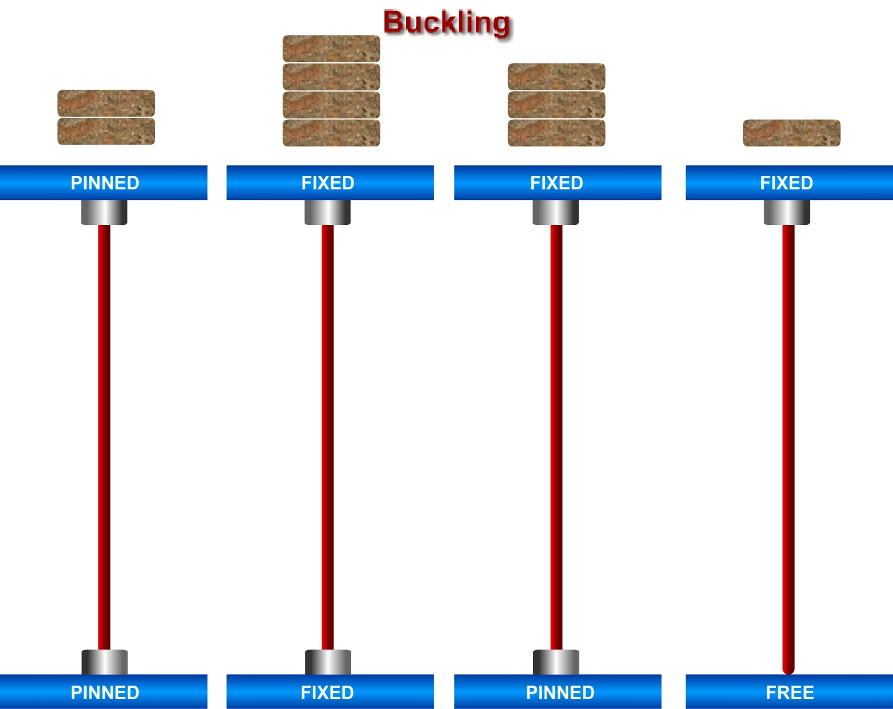

Structural members that support compressive axial loads are called Columns. A column in structural engineering is a vertical structural element that transmits, through compression, the weight of the structure above to other structural elements below.

In general if a beam element is under a compressive load and its length is an order of magnitude larger than either of its other dimensions such a beam is called columns. Due to its size its axial displacement is going to be very small compared to its lateral deflection called buckling.


To determine the Column stability using boundary conditions.


Observation Table:
| Section Type | Type of joints | Young's Modules(Ksi) | Area of M.I(mm4) | Length of Column(Ft) | Boundary conditions | Area of cross section(A) | Radious of Gyration(R) | Critical Buckling Load | |
| Column | 1.Pinned-Pinned column buckling load | ||||||||
| Column | 2.Fixed-Fixed column buckling load | ||||||||
| Column | 3.Fixed-Pinned buckling load | ||||||||
| Column | 4.Fixed-Pinned column buckling load |

Q1.
The buckling load formula for column?
Q2.
Number of boundary conditions that are present in columns
Q3.
What are the constant values that doesn’t change in calculation of Pcr

Procedure for the experiment is as follows.
1.Pin a graph paper on the wooden board behind the column.
2.Apply the load at the top of columns increasing gradually. At certain stage of loading the columns shows abnormal deflections and gives the buckling load.
3.Note the buckling load for each of the four columns.
4.Trace the deflected shapes of the columns over the paper. Mark the points of change of curvature of the curves and measure the effective or equivalent length for each case separately.
5.Calculate the theoretical effective lengths and thus buckling loads by the expressions given above and compare them with the observed values.

- Mechanics of materials by Dr.B.C.punmia
- Stability of columns by YI Nagornyi
- Design of steel structures by Prof.S.R.Satish Kumar and Prof A.R.Santha Kumar